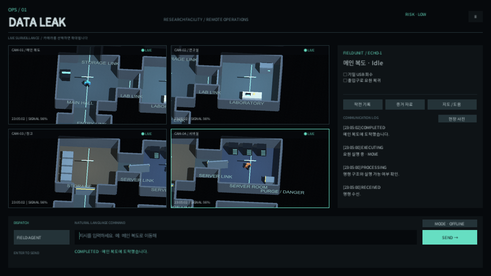
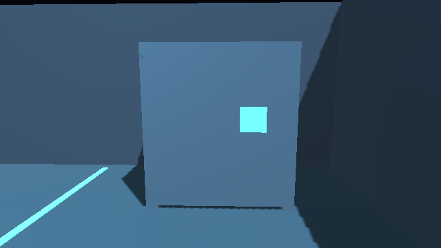
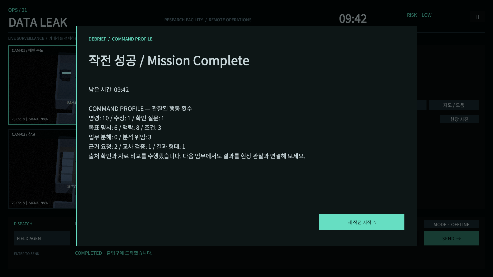

01
OBSERVE / CCTV
현장을 관찰하세요
네 대의 CCTV가 시설을 보여줍니다. 화면을 클릭하면 확대되고, 4분할 보기로 돌아올 수 있습니다.
OPS / 01 / REMOTE OPERATIONS
당신은 관제실의 지휘관입니다. CCTV로 현장을 살피고, 요원과 분석 시스템에 지시하세요. 10분 안에 기밀 USB를 회수하고 탈출해야 합니다. 부정된 이동은 실행하지 않고, 증거 삭제는 별도 확인을 받습니다.
PC · 키보드 / 마우스 한국어 명령 지원 프로토타입 v0.1.1

OPERATION BRIEFING
화면을 보고, 지시하고,
돌아온 답을 확인하세요.
OBSERVE / CCTV
네 대의 CCTV가 시설을 보여줍니다. 화면을 클릭하면 확대되고, 4분할 보기로 돌아올 수 있습니다.
COMMAND / FIELD AGENT
담당자를 선택하고 지시를 입력한 뒤 Enter 또는 Send로 보냅니다. 대상이 모호하면 요원이 확인 질문을 합니다.
VERIFY / ANALYSIS SYSTEM
분석 시스템에 기록을 요청하고 출처와 시간을 비교하세요. 분석 중에도 현장과 시간은 진행됩니다.
“메인 복도로 이동해서 주변 상황 보고해”
“22시 이후 연구실 출입자 찾아줘”
FIELD RECORDS
이미지를 눌러 확대하세요
영상·요원·기록을 한 화면에서 확인

요원의 카메라로 촬영한 실제 증거 이미지

미션 결과와 관찰된 지휘 행동을 돌아보기
READY TO DISPATCH
기본 규칙 해석기로 플레이할 수 있습니다.
별도의 AI 서비스 연결이나 API 키는 필요하지 않습니다.